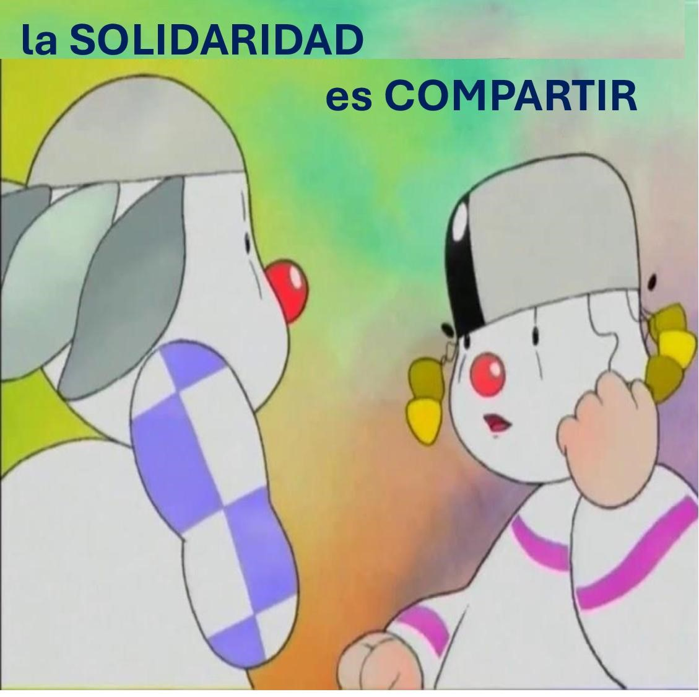

TU GESTO DE SERVICIO
Apoyar a quien tiene dificultad
Vive esta cara como una acción concreta de paz.
VOLUNTARIADO · PARA LA PAZ
Lanza el dado y descubre una forma concreta de acompañar, apoyar y amar desde el servicio voluntario.

Vive esta cara como una acción concreta de paz.
LAS SEIS CARAS
Pulsa una tarjeta para convertir el servicio en una acción concreta.
“El voluntariado siembra paz cuando el servicio se hace sonrisa, cercanía y disponibilidad.”
Servir · Acompañar · Amar